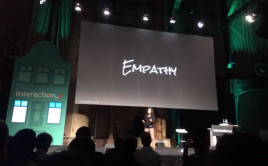
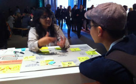
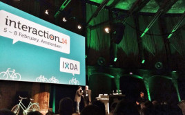

Stories
Graphic recordings Education Summit
February 25, 2014 ⁞ To expand the discussion about interaction design education beyond the Interaction Design Education Summit held on February 5, MJ Broadbent created graphic recordings during the morning and afternoon plenary sessions.
Closing keynote by Saskia Sassen
February 11, 2014 ⁞ Impressions of Saskia Sassen's closing keynote for Interaction14.
Field report – Saturday afternoon
February 11, 2014 ⁞ Interaction14 field report of Saturday afternoon.
Field report – Saturday morning
February 11, 2014 ⁞ Interaction14 field report of Saturday morning.
Keynote by Gillian Crampton Smith
February 11, 2014 ⁞ [src=”http://storify.com/ixda/interaction14-keynote-gillian-crampton-smith” alt=”The first keynote of the last day of Interaction14. Gillian Crampton Smith raises the question if there is a language of interaction design.”]
Keynote by Daniel Rosenberg
February 10, 2014 ⁞ The second keynote of Day 2, in which Daniel Rosenberg bemoans the de-intellectualization of Interaction Design and proposes three solutions
Field report – Friday afternoon
February 10, 2014 ⁞ Interaction14 field report of Friday afternoon.
Field report – Friday morning
February 10, 2014 ⁞ The second day kicked off with a Mass Yoga Session. Interaction14 field report of Friday morning.
Keynote by Irene Au
February 10, 2014 ⁞ The first keynote of Day 2 by Irene Au about Body Languages of Interaction Design.
Keynote by Scott McCloud
February 9, 2014 ⁞ Impressions of Scott McCloud’s keynote for Interaction14.
Field report – Thursday afternoon
February 9, 2014 ⁞ Interaction14 field report of Thursday afternoon.
Field report – Thursday morning
February 9, 2014 ⁞ Interaction14 field report of Thursday morning.
Opening Keynote by Klaus Krippendorf
February 9, 2014 ⁞ Impressions of Klaus Krippendorff's opening keynote for Interaction14.
The languages of beauty at Interaction14
February 9, 2014 ⁞ First impressions from the Interaction14 workshops and field trip.
2014 Education Summit – Provocations
February 9, 2014 ⁞ Four provocations guided the 2014 Education Summit.
2014 Education Summit – Keynote by Jared Spool
February 9, 2014 ⁞ Storify report on Jared Spool's keynote for the 2014 Interaction Design Education Summit.